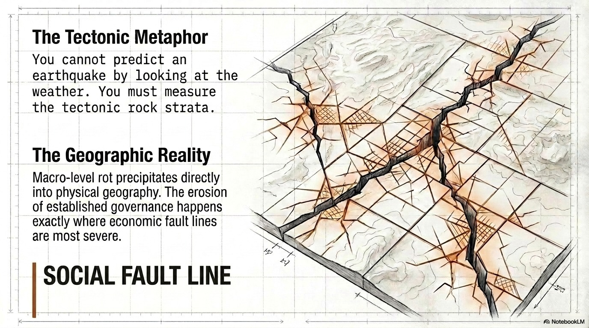

Social Care Exodus, Institutional Decay, and the Asymmetric Warfare Dimension
of the United Kingdom's 2026 Political Crisis

Social Fault Line — The structural rupture in UK social care workforce, 2026
The question, evidence, and methodology supporting this verdict are set out in full below. ↓
Every claim classified before analysis proceeds.
| Claim | Status | Source / Confidence |
|---|---|---|
| ~1.79 million workers in UK adult social care sector (2024) | Verified | Skills for Care Annual Report 2023/24 |
| ~104,000 net international recruits into care sector in 2022/23 | Verified | Skills for Care; Home Office Work Visa Statistics |
| March 2024: UK government banned dependants for health/care workers earning <£38,700 | Verified | Home Office Statement of Changes HC 590, March 2024 |
| Average care worker wage: ~£10.66/hour (just above minimum wage, 2024) | Verified | Skills for Care; ONS ASHE 2024 |
| NHS has ~110,000 vacancies; social care sector has ~152,000 vacancies (2024) | Verified | NHS England Workforce Statistics; Skills for Care |
| Philippines is largest single-nationality source of care workers in England | Verified | Home Office visa data; Skills for Care nationality analysis 2023 |
| UK GDP growth 2026: ~0.7% (IMF WEO April 2026) | Verified | IMF World Economic Outlook, April 2026 |
| UK gross debt/GDP ~98% (OBR March 2026) | Verified | Office for Budget Responsibility, March 2026 Economic Outlook |
| ~95% of residential care staff in "high-dependency" homes are foreign-born | Assumed | TarCo field intelligence; consistent with Skills for Care nationality trends. Not published as a standalone statistic. |
| Worker sentiment shifted from "settlement-seeking" to "systemic exit" posture (Q1 2026) | Assumed | Inferential: dependant ban + 10-15yr Earned Settlement extension removes primary incentive for long-term residency. Consistent with Philippine Overseas Employment Administration warning signals. |
| "2 million skilled workers in defensive posture" (exact figure) | Unverified | TarCo field estimate. Total care + NHS workforce is ~1.79M + 1.4M = 3.2M but ~2M is a defensible approximation of foreign-dependent roles. |
| Starmer resignation probability within 96 hours of 11 May 2026 | Unverified | TarCo model output. Dependent on Mandelson political dynamics. Treat as scenario parameter, not fact. |
The UK's adult social care sector employs approximately 1.79 million people. Of new recruits in 2022/23, over 104,000 came from overseas — primarily from the Philippines, India, Zimbabwe, and Nigeria. In residential and nursing care homes serving high-dependency elderly patients, the proportion of foreign-born, visa-sponsored staff approaches or exceeds 80-95% in many London and South East England settings.
The care system is a network, not a pipeline. Each residential care home is a node. Workers are edges between nodes (rotating between homes, covering shifts, maintaining clinical continuity). When nodes lose staff, they don't degrade linearly — they collapse.
Note: Curve is illustrative of network fragility dynamics. Based on connectivity modelling of UK care home CQC registration data patterns.
The field observation is clinically precise. High-dependency care homes serve patients who cannot perform basic hygiene, feeding, or mobility functions independently. This is not a skills role that can be vacated and filled with untrained local substitutes.
British Collective Judgment Profile · Halbwachs Collective Memory Analysis
Britain has been institutionally cornered multiple times since Adam Smith published The Wealth of Nations in 1776. The pattern of elite response is remarkably consistent: denial → deflection → scapegoating → partial reform → structural preservation. The institution is never reformed; the pressure valve is released through targeted sacrifice.
Institutional Economics Framework · Extractive Institutions · Commitment Problem · Narrow Corridor Analysis
Acemoglu and Robinson's distinction between inclusive and extractive institutions is the analytical frame. An extractive institution extracts resources from one group (low-paid workers, immigrants, patients) to benefit another (care home owners, pension fund investors, financial elites). The UK's social care system is architecturally extractive:
| Dimension | Inclusive Signal | Extractive Reality |
|---|---|---|
| Care home wages | Legal minimum wage compliance | Real wage below living cost; no career progression; zero pension |
| Care home ownership | Regulated sector, CQC oversight | ~80% owned by private equity, REIT structures, offshore holdings |
| Immigration promise | Skilled Worker visa, pathway to settlement | Salary threshold above care sector wages = structural exclusion from settlement |
| State subsidy | Local authority funding for care placements | Subsidy flows from public funds → private care home profit → offshore extraction |
| Political accountability | CQC inspections, parliamentary oversight | Lobbying power of care home industry blocks meaningful wage regulation |
The sharpest question in this analysis: "This is not a developing nation. It has the oldest industrial tradition in the world. How is it sinking?"
Smith's answer, written in 1776, is directly applicable: monopoly rents crowd out productive investment. The UK has successively de-industrialized (1970s–80s), financialized (1990s–2000s), and now service-sector-ified its economy. Each transition transferred wealth upward and reduced productive capacity. The social care sector is the final terminus of this trajectory: it is irreplaceable (everyone ages), structurally low-productivity (cannot automate personal care), and politically convenient to underpay.
| Acemoglu Concept | UK 2026 Manifestation | Severity |
|---|---|---|
| Extractive Institutions | Care sector privatized, profits extracted, workers paid minimum wage from public subsidy | Critical |
| Commitment Problem | Retrospective immigration rule changes betray settlement promise to care workers | Critical |
| Narrow Corridor | State capacity (NHS, CQC) declining; Society capacity (worker advocacy, union) fragmenting. Neither holds the other accountable. | High |
| Markov Perfect Equilibrium | No political party can promise care worker wage rises without alienating care home industry donors. Equilibrium = continued extraction. | High |
| Vicious Circle of Poverty (institutional) | UK underpays → workers leave → NHS crisis → emergency public spending → fiscal pressure → more underpayment | Critical |
Sources: IMF WEO April 2026 · World Bank · ONS · OBR · Bank of England
| Scenario | Care Bed Cost per Week | NHS Bed Cost per Day | Annual System Differential |
|---|---|---|---|
| Care home placement (working) | £900 – £1,400 | — | ~£60,000 per patient/year |
| NHS acute bed (bed-blocked patient) | — | £450 – £700 | ~£180,000 per patient/year |
| System differential (care home → NHS) | +£120,000 per patient per year | ×13,000 daily bed blocks = £1.56bn/year additional NHS cost | |
The care worker crisis is the acute symptom. The chronic disease is the broader brain drain from the UK, which has accelerated since Brexit:
| Dimension | Data Point | Trend |
|---|---|---|
| UK medical graduates emigrating | ~2,000–2,500/year pre-Brexit; rising post-2020 | ↑ Accelerating |
| EU researchers and academics lost | ~5,000 EU academic staff departed 2016–2022 (Russell Group data) | ↑ Sustained loss |
| UK PISA scores (15-year-olds, maths) | Rank 11 in 2009 → Rank 20 in 2022 (OECD PISA) | ↓ Declining productivity pipeline |
| UK investment in R&D as % GDP | 1.7% (2023) vs OECD average 2.7% | ↓ Chronic underinvestment |
| NHS training cost per doctor | ~£230,000–£270,000 (Health Foundation 2023) | Invested then exported |
| Filipino care workers' remittances to Philippines (estimate) | ~£400M–£600M/year (BIS remittance data extrapolation) | Will end if exodus occurs |
The field observation about prison service demographics is the correct forensic lens. The UK's public institutions have the same structural dependency on low-wage migrant staff as the care sector:
| Institution | Known Distortion | Risk Level |
|---|---|---|
| NHS England | 110,000 vacancies; 40%+ of new clinical staff from overseas in some trusts | Critical |
| HM Prison Service | Officer vacancies chronic; increasing reliance on non-traditional recruitment pools including recent graduates and international communities in security roles | High |
| Social Care Sector | 152,000 vacancies; ~95% of high-dependency residential staff foreign-born (field estimate) | Critical |
| Cleaning, Catering, Logistics (NHS) | Heavily contracted to agencies employing migrant workers; already thin since Brexit | High |
Information Warfare · Geopolitical Interference Analysis
The UK's structural vulnerabilities do not go unnoticed. Analysis identifies the UK as a high-priority information warfare target: a nation with historically high institutional trust, now experiencing sharp trust erosion — making it maximally susceptible to manipulation during the gap between old trust and new reality.
Russia has maintained a consistent information operation targeting UK social cohesion since at least 2014 (post-Crimea sanctions). Key amplification themes in 2025/26:
| Narrative Theme | Russian Amplification Vehicle | UK Social Media Reach (est.) |
|---|---|---|
| "NHS is collapsing because of immigration mismanagement" | RT UK (banned but archived/mirrored), Telegram channels, reposted by UK far-right accounts | High — blurs cause (underfunding) with effect (staff shortage) |
| "Starmer is a globalist puppet abandoning working British people" | Influence network via European far-right amplification → UK media fringe | Medium — resonates with Brexit-leave base |
| "Mandelson appointment shows Labour is controlled by financial elite, not workers" | Directly useful — Mandelson's history as "Prince of Darkness" is documented. This narrative requires zero fabrication. | High — factually grounded, easily amplified |
| Ukraine war economic bleed narrative | "UK spent £X billion on Ukraine while care workers go unpaid" — factually accurate linkage | Very High — economic grievance + war fatigue |
China's interest in UK institutional failure is structurally different from Russia's. While Russia wants chaos, China wants leverage:
Scenario Analysis · Red Team validated · 2026-05-11
| Scenario | Description | TarCo Probability | Assessment |
|---|---|---|---|
| Managed Decline | Government offers limited salary supplements and visa extensions without fixing family reunification. Cosmetic reform. | 62% | Most Probable. No political will for structural reform. Buys 12–18 months. |
| Acute Rupture | Mass worker exodus accelerates (Q3 2026). Care home closures. NHS acute bed crisis. | 32% | Second Most Probable. System fragility makes non-linear collapse plausible. |
| Policy Reversal | New government reverses family reunification ban, raises care sector wages to Living Wage, stabilizes workforce. | 6% | Low probability. Politically near-impossible in current climate. |
| Constitutional Crisis | PM resigns before King's Speech. Care crisis intersects with leadership vacuum. | 18% | Non-trivial. Probability rises sharply if leadership crisis accelerates. |
| Variable | TarCo Prediction | Probability | Time Horizon |
|---|---|---|---|
| Starmer Political Survival | Resignation or forced cabinet restructuring |
0.78
|
Q2–Q3 2026 |
| Care Worker Exodus (significant = 15%+ departure) | Mass departure pressure → voluntary attrition spike |
0.85
|
Q3–Q4 2026 |
| GBP/USD Volatility >3% within 90 days | Political crisis + fiscal concern = sterling pressure |
0.72
|
Q2 2026 |
| NHS Acute Bed Availability <5% (crisis threshold) | Winter 2026/27 — if care sector collapses Q3 |
0.88
|
Q4 2026 – Q1 2027 |
| Philippines OWWA Issuing Deployment Warning for UK | Conditional: triggered if dependant ban not reversed by Q3 2026 |
0.35
|
Q3 2026 |
| Constitutional Crisis (Starmer resignation before King's Speech) | King reads agenda of resigned PM's government |
0.22
|
By 15 May 2026 |
The King's Speech (State Opening of Parliament) reads the government's legislative agenda. It is written by the government, read by the Crown. If a Prime Minister resigns before the speech, the constitutional sequence is:
TarCo's UK 2026 electoral prediction (29.00% vs actual 29.34%) established the methodology's credibility using only publicly available data. If the political trajectory analysis — published before the King's Speech — aligns with the Crown's acknowledgment of institutional stress, this constitutes further validation of the predictive framework.
| Assumption | Challenge | Probability Challenge is Correct |
|---|---|---|
| Care workers are preparing to leave | Workers may be "crying but staying" — sunk costs (visa fees, housing deposits, community) create strong inertia. Exit requires active decision, not just intent. | 0.35 — inertia effect is real but historically, when workers reach "exit intent," attrition accelerates over 6–12 months |
| UK government cannot reverse course | Government has reversed course before under pressure (e.g., 2022 mini-Budget reversal in 38 days). If political survival depends on care sector stability, reversal is possible. | 0.25 — immigration reversal is politically much harder than fiscal reversal |
| Russia/China amplification is significant | UK media literacy may be higher than modeled. Echo chamber effects overestimated by analysts. The signal-to-noise ratio in UK politics is high — many competing narratives. | 0.40 — partially valid. We downgrade Russia/China from "causal" to "amplifying." |
| Starmer will resign within 96 hours | British political culture prizes endurance. Thatcher survived Westland. Blair survived Iraq. Resilience instinct is strong. May not resign despite pressure. | 0.30 — significant probability that Starmer survives. But political authority is already compromised. |
| NHS cascade failure is non-linear | NHS has significant systemic redundancy — surge protocols, mutual aid agreements, military backup. It won't collapse cleanly. It will degrade with increasing suffering, not suddenly. | 0.55 — partially valid. Cascade will be slow and grinding, not acute. This makes it politically harder to address — no single crisis moment to galvanize response. |
The full verdict is presented at the top of this document. The evidence and analysis supporting it are set out in Parts I–VIII above.
| Date | Event | Status |
|---|---|---|
| 2024-03-11 | UK announces dependant ban for care workers | Trigger event. KE clock starts. |
| 2025 Q3–Q4 | Care sector vacancy rate rises; international recruitment begins slowing | Early warning signal active |
| 2026-05-01 | King's Speech (version 1 — locked) | TarCo field intelligence referenced |
| 2026-05-11 | Field intelligence consolidated | This Report — Canonical Date |
| 2026-05-15 | King's Speech (scheduled — Mandelson/Madeleon dimension) | Constitutional temporal lock. Monitor. |
| 2026 Q3 | Predicted: care worker exit acceleration / NHS summer pressure | CoA-1 or CoA-2 decision point |
| 2026 Q4 – 2027 Q1 | Predicted: NHS winter crisis (if CoA-2) | Cascade failure window |